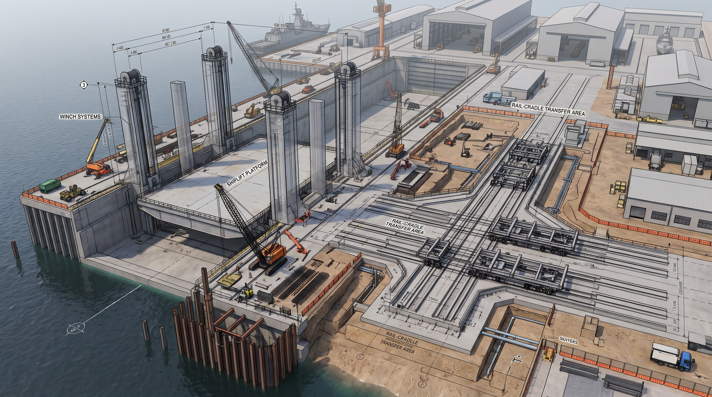
Construction PlanningShiplift & Transfer Construction Planning
Strategic naval engineering planning for heavy-capacity shiplift and rail-cradle ship transfer infrastructure at the Royal Thai Naval Dockyard.
Bridging Sovereign Ship Construction & Sea Command with High-Precision Computational Mechanics.
Ship Construction Planning Engineer, Naval Architect and Marine Engineer at the Royal Thai Naval Dockyard. Graduated with a perfect 7.000 / 7.000 GPA (100% High Distinction) in Master of Maritime Engineering from The University of Adelaide and First-Class Honours (3.855 GPA) from the Royal Thai Naval Academy. Specialized in structural FEA, underwater shock & vibration dynamics, submarine infrastructure, and multi-variable engineering optimisation.
Driven by complex analytical challenges—combining advanced Finite Element & hydrodynamic simulation with practical naval shipyard execution.
Click Executive Case Study on any project to inspect the engineering problem statement, governing standards, methodology, and quantitative analytical outcomes.

Construction PlanningStrategic naval engineering planning for heavy-capacity shiplift and rail-cradle ship transfer infrastructure at the Royal Thai Naval Dockyard.
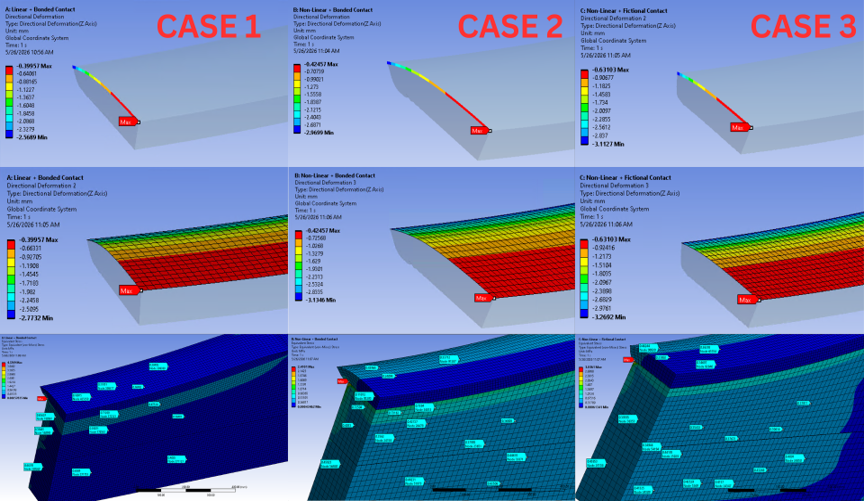
Hyperelastic FEAMulti-material structural strength analysis of composite submarine docking blocks (reinforced concrete, timber, wedges, and Mooney-Rivlin 2P hyperelastic rubber pads).
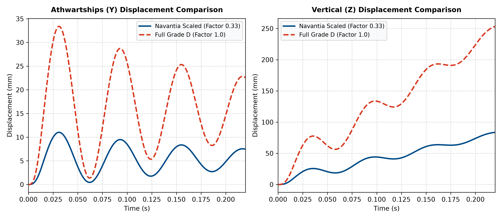
MAP 01-470 VerificationFirst-principles mathematical derivation and MATLAB/Python verification of FEM shock displacement profiles per UK MoD MAP 01-470 (Procedure TDD) for the Dorna Fire Control Director.
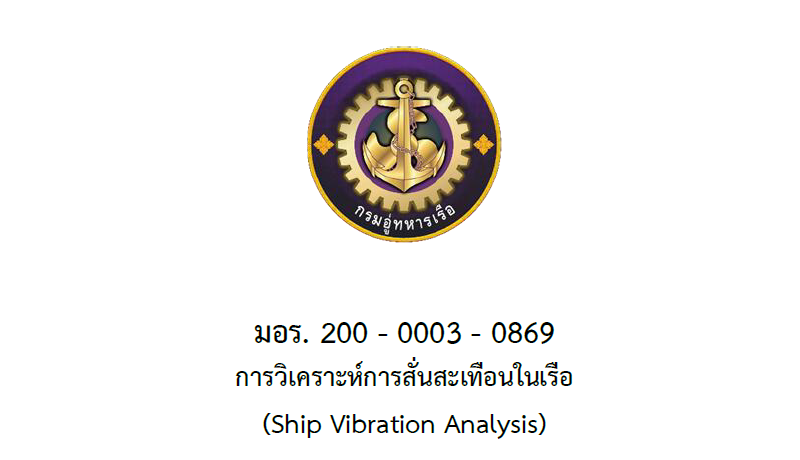
58-Page Naval StandardAuthored the official 58-page Royal Thai Naval Dockyard standard governing shipboard hull, machinery, and shafting vibration analysis and acceptance criteria.
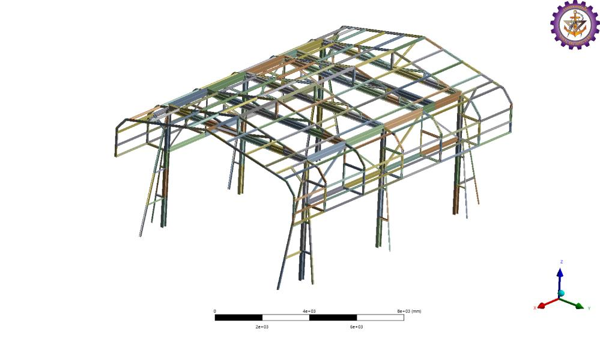
ANSYS 2026 R1Finite Element safety assessment (ANSYS 2026 R1) of the Nakhon Phanom Naval Station lifting beam system for heavier SOC-R riverine craft, engineering an 800 mm lifting-point shift and Frame 3 reinforcement.
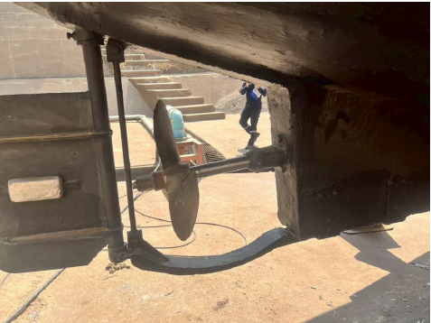
Hydrodynamic Optimisation38-page systematic preliminary propeller design investigation and multi-variable hydrodynamic optimisation matching vessel resistance, wake fraction, and thrust deduction under Burrill cavitation limits.
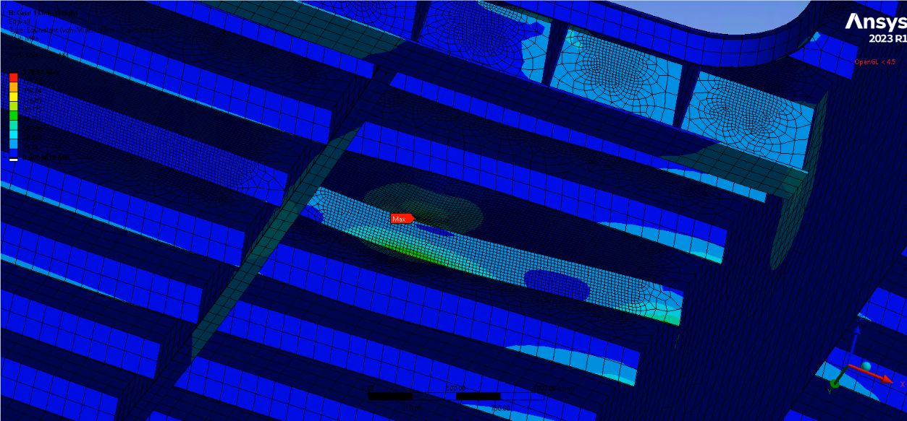
Mesh Convergence (80,206 Elements)3D Finite Element structural stress assessment in ANSYS Workbench across static self-weight and dynamic acceleration load cases, featuring a 5-tier mesh convergence study up to 80,206 elements.
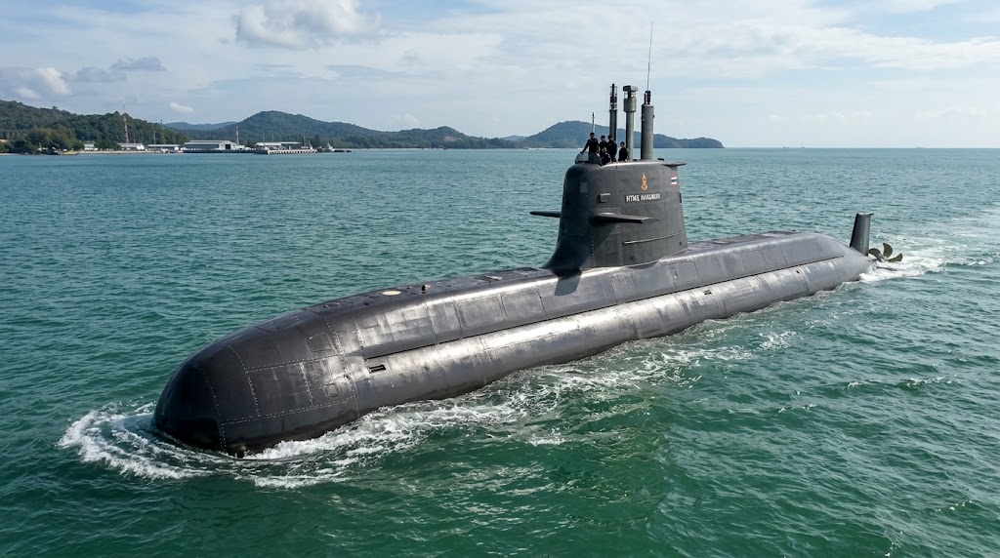
Submarine Concept & CONOPSEnd-to-end submarine concept design and 46-page CONOPS: multi-mission payload integration (Torpedoes, ASuW Missiles, Mines, SOF Lock-out), Diesel/Battery/AIP propulsion sizing, pressure hull scantlings, and Trim Polygon stability.
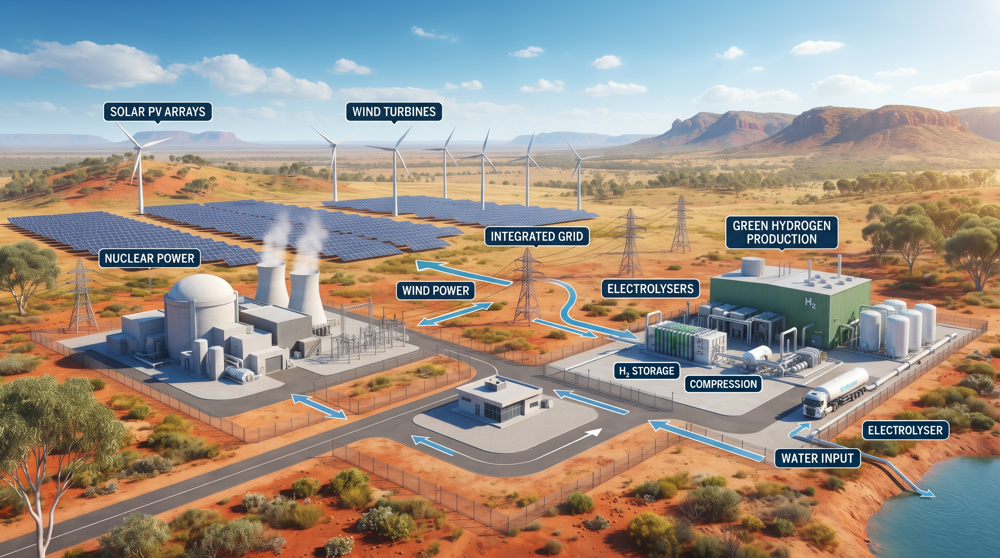
101-Page Master’s ThesisHILT CRC-sponsored 101-page Master’s thesis: developed an hourly MATLAB simulation and optimisation model comparing stand-alone nuclear reactors (PWR & HTGR) and hybrid nuclear-renewable systems for 24/7 industrial hydrogen.
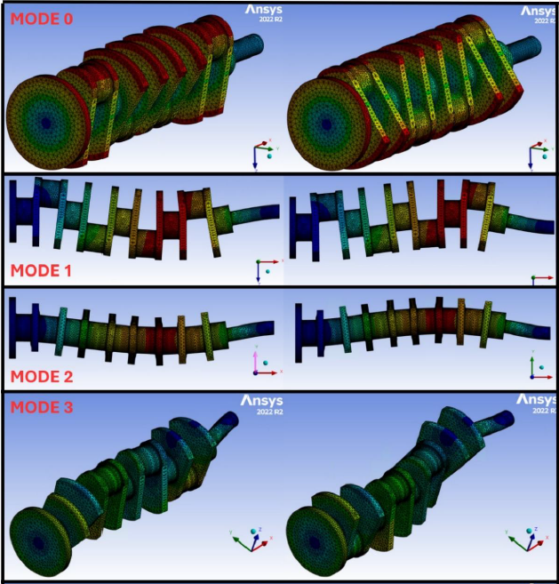
Modal / Harmonic / TransientFull 3D Finite Element dynamic analysis of an internal combustion engine crankshaft under cyclic firing forces, identifying natural frequencies, harmonic resonance peaks, and transient fillet stresses.
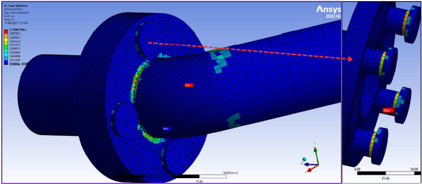
Solid-Shell-Beam CouplingCoupled Solid, Shell, and Beam element FEA modelling per ASME B31.3 / B16.5 evaluating combined bending, torsional, and nonlinear flange contact stresses with mesh-independence verification.
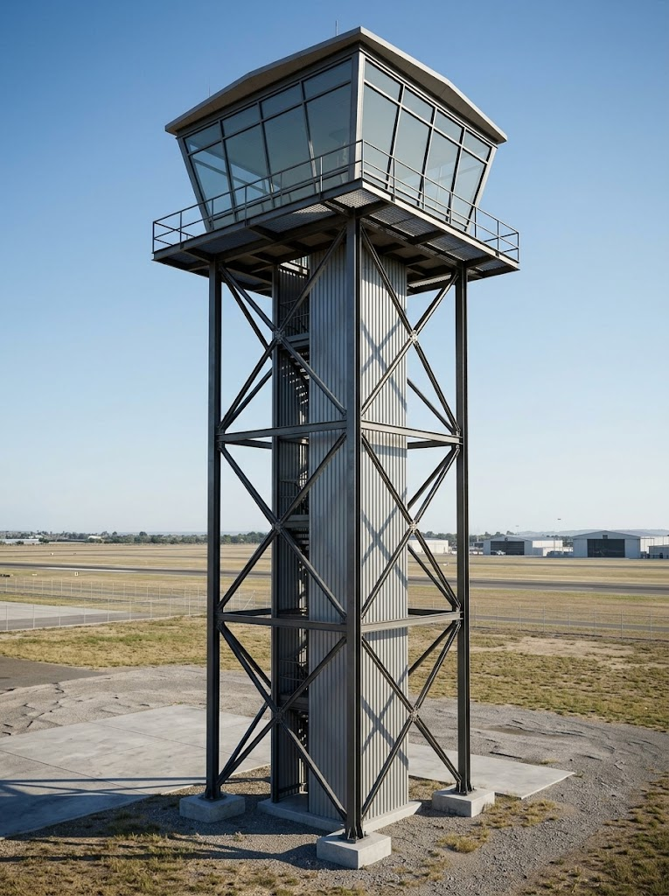
AS 4100 Portal FrameComprehensive structural steel design of an industrial portal frame building to Australian Standard AS 4100:2020: rafter/column member sizing, moment-resisting knee/apex haunch connections, and wind load deflection analysis.
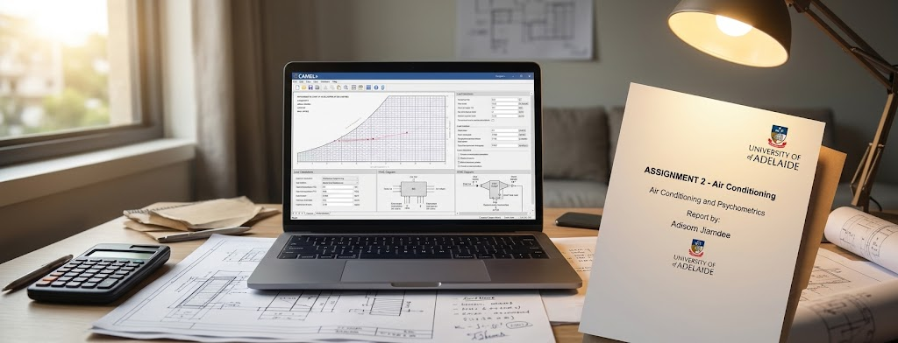
96/100 • Top Transcript ScoreMulti-zone commercial building cooling/heating load analysis and psychrometric process design in CAMEL+ software, sizing air handling units, chilled water coils, and variable air volume systems to AIRAH standards.
Leading engineering planning for the Shiplift & Transfer Construction Planning program, focusing on heavy-capacity shiplift and ship transfer system infrastructure.
Spearheaded structural FEA for submarine docking blocks, authored the 58-page RTN Dockyard Ship Vibration Standard (มอร. 200-0003-0869), audited UK MoD MAP 01-470 shock calculations for HTMS Chang, and designed lifting-beam retrofits for SOC-R riverine craft.
Selected for full-time postgraduate specialization in Maritime Engineering, graduating with a perfect 7.000 / 7.000 GPA (High Distinction in every course).
Directed shipboard main propulsion engines, auxiliary machinery, electrical power generation, hull maintenance, and damage control readiness across three Royal Thai Navy vessels.
Managed watchkeeping, propulsion plant reliability, and marine engineering maintenance during offshore patrol deployments.